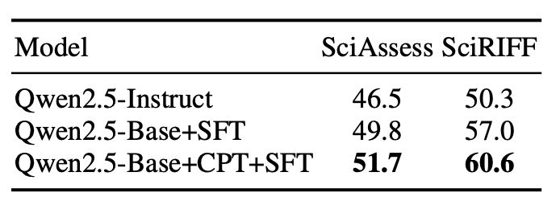
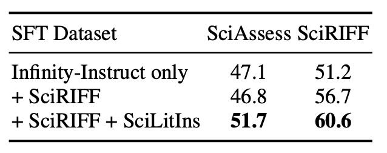
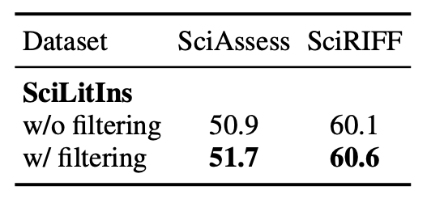

SciLitLLM: How to Adapt LLMs for Scientific Literature Understanding?
TL;DR
- We devise a pipeline to adapt general LLMs to scientific literature understanding. It combines continual pre-training (CPT) and supervised fine-tuning (SFT) to enhance scientific knowledge base and instruction-following capabilities for specialized domain tasks.
- We propose a novel domain instruction synthesis method to curate instructions for scientific literature understanding, resulting in a new dataset - SciLitIns.
- SciLitLLM, trained through the proposed pipeline, outperforms leading open-source LLMs on scientific literature understanding.
Performance Overview

Performance of SciLitLLM on scientific literature understanding benchmarks. SciLitLLM outperforms Llama3.1 and Qwen2.5 models with similar scales.
Introduction
Scientific literature understanding involves the systematic evaluation and interpretation of scientific texts and publications, to identify trends and extract targeted information.
Below is an example in SciRIFF. The LLM is asked to understand the content of a biomedical research paper and then extract the targeted information. LLMs' potential might be hindered by two major barriers:
- Unfamiliarity with scientific tasks, leading to the inability of Galactica-6.7B to follow task instructions accurately.
- A lack of scientific knowledge, which results in errors such as the missing important entities in Llama-3.1-8B.
Method
SciLitLLM utilizes a two-stage pipeline for enhancing domain-specific knowledge in LLMs.
- Stage 1, Continual Pre-Training (CPT): This step focuses on injecting domain-specific knowledge by pre-training on a curated scientific corpus. Over 73,000 textbooks and 625,000 research papers were processed and filtered to ensure high-quality data.
- Stage 2, Supervised Fine-Tuning (SFT): To fine-tune the model's instruction-following abilities, a novel set of scientific instructions called SciLitIns was created. This dataset encompasses diverse scientific tasks, guiding the model in understanding and executing complex scientific tasks.

Stage 1: Scientific Knowledge Injection
High-quality scientific textbooks and research papers provide a wealth of scientific knowledge. However, we face some practical challenges:
- Formatting and grammar errors introduced during PDF parsing.
- Low-information segments, such as references and garbled text.
An example of formatting and grammer correction.
Formatting and Grammar Correction
To address these challenges, we implemented the following modules:
- Formatting and Grammar Correction: We utilized the Llama3-8B model to correct errors introduced during the PDF parsing process.
- CPT Quality Filtering: Llama3-70B was used to score a subset of the texts. These scores were then used as labels to train a lightweight classifier for evaluating the quality of the training corpus.
Examples of high and low-quality CPT text and SFT instructions.
Stage 2: Scientific Instruction Fine-Tuning
To address the scarcity of scientific instructions and the high costs associated with manual annotation, we developed a novel instruction generation and quality control process. This involved creating a probability table of domain-specific keywords and a list of scientific task descriptions. We then sampled keywords and tasks to generate a diverse dataset of domain-specific instructions by GPT-4o.
An Example in SciLitIns.
- Heuristic Deduplication: We calculated the Levenshtein distance to filter out the top 20% of highly repetitive instructions, ensuring the diversity of the instruction set.
- Model-Based Filtering: We used Llama3-70B-Instruct to evaluate the generated instructions across five dimensions: clarity, complexity, correctness, usefulness, and adaptability. Instructions with an average score below 4 were excluded to maintain the quality of the instruction set.
The quality assessment of SciLitIns.
Evaluation Results

Key Observations:
- SciLitLLM-7B-Instruct achieves the highest performance in all 4 domains on SciAssess, outperforming the second-best model by 4.0%. On SciRIFF, it surpasses baseline models by a substantial margin of 10.1%
- SciLitLLM-14B-Instruct shows a 4.6% and 7.5% performance improvement over Qwen2-14B-Instruct on SciAssess and SciRIFF, respectively. It even outperforms other open-source models with five times more parameters.
Ablation Study
To assess the contribution of each component in the SciLitLLM pipeline, we conducted a comprehensive ablation study.
-
Effect of Continual Pre-Training: Removing the CPT stage resulted in a significant drop in domain-specific performance. The results shows that the CPT stage is essential to improve scientific literature understanding ability.

-
SFT on SciLitIns: Our synthetic dataset SciLitIns effectively improves performance on both benchmarks.

-
Influence of Instruction Filter: Applying the filter improves the performance of SciLitLLM-7B on SciAssess (+0.8%) and SciRIFF (+0.5%). This shows that our proposed filter refines the quality of SciLitIns .

Please consider citing our paper if you find our work helpful!
BibTeX
@misc{li2024scilitllmadaptllmsscientific,
title={SciLitLLM: How to Adapt LLMs for Scientific Literature Understanding},
author={Sihang Li and Jin Huang and Jiaxi Zhuang and Yaorui Shi and Xiaochen Cai and Mingjun Xu and Xiang Wang and Linfeng Zhang and Guolin Ke and Hengxing Cai},
year={2024},
eprint={2408.15545},
archivePrefix={arXiv},
primaryClass={cs.LG},
url={https://arxiv.org/abs/2408.15545},
}